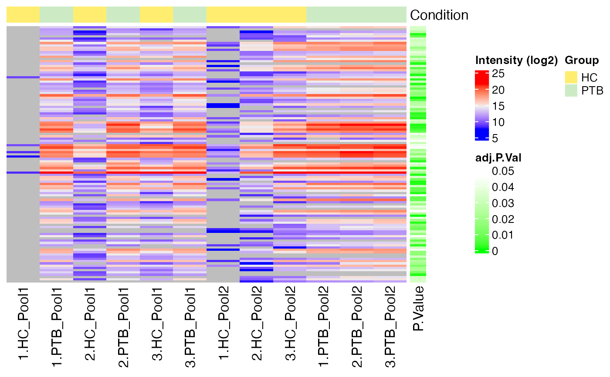
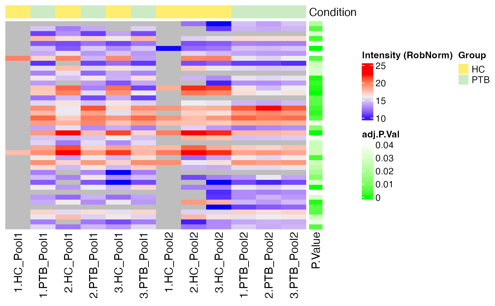
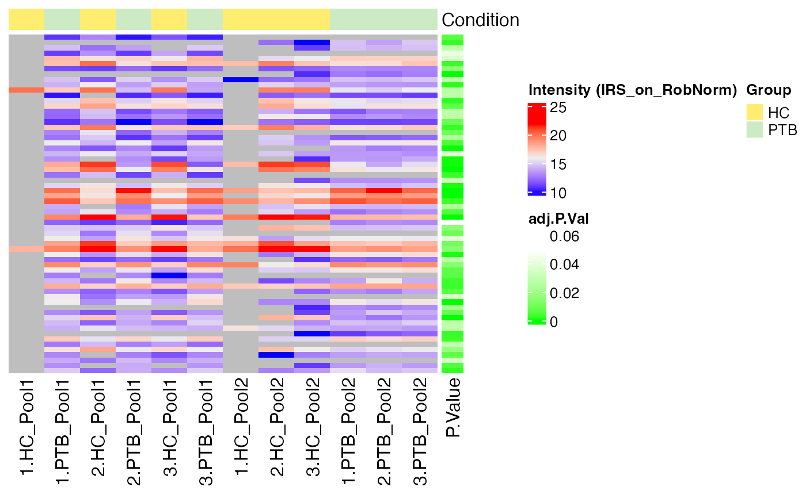
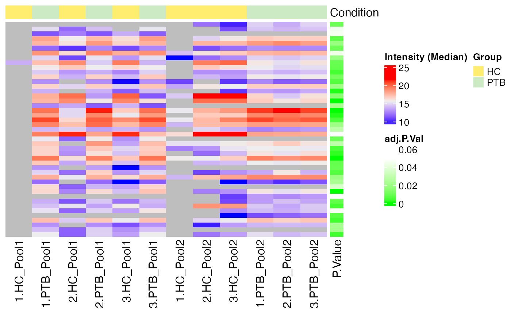
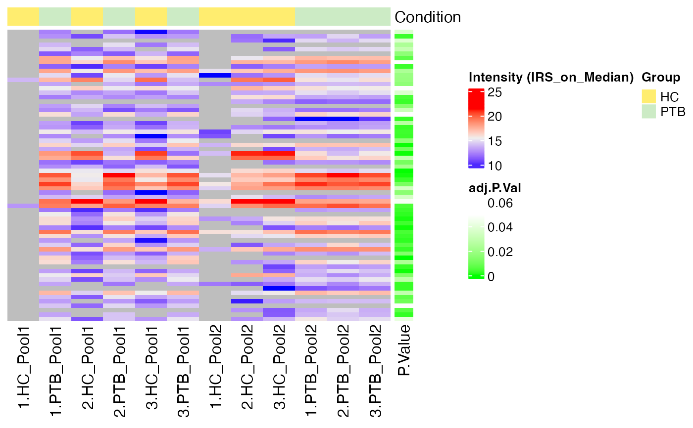

Heatmap of DE results
Usage
plot_heatmap_DE(
se,
de_res,
ain,
comparison,
condition = NULL,
label_by = NULL,
pvalue_column = "adj.P.Val",
col_vector = NULL
)Arguments
- se
SummarizedExperiment containing all necessary information of the proteomics data set (including the normalized intensities)
- de_res
data table resulting of run_DE
- ain
Vector of strings of normalization methods to visualize (must be valid normalization methods saved in de_res)
- comparison
String of comparison (must be a valid comparison saved in de_res)
- condition
column name of condition (if NULL, condition saved in SummarizedExperiment will be taken)
- label_by
String specifying the column to label the samples (If NULL, the labels column of the SummarizedExperiment object is used. If "No", no labeling of samples done.)
- pvalue_column
column name of p-values in de_res
- col_vector
Vector of colors to use for the heatmap. If NULL, default colors are used.
Examples
data(tuberculosis_TMT_se)
data(tuberculosis_TMT_de_res)
plot_heatmap_DE(tuberculosis_TMT_se, tuberculosis_TMT_de_res, ain = NULL,
comparison = "PTB-HC",
condition = NULL, label_by = NULL,
pvalue_column = "adj.P.Val", col_vector = NULL)
#> All assays of the SummarizedExperiment will be used.
#> Warning: raw: not valid normalization methods. Only valid normalization methods will be visualized.
#> Label of SummarizedExperiment used!
#> Condition of SummarizedExperiment used!
#> <simpleError in stats::hclust(stats::dist(as.matrix(data))): NA/NaN/Inf in foreign function call (arg 10)>
#> <simpleError in stats::hclust(stats::dist(as.matrix(data))): NA/NaN/Inf in foreign function call (arg 10)>
#> <simpleError in stats::hclust(stats::dist(as.matrix(data))): NA/NaN/Inf in foreign function call (arg 10)>
#> <simpleError in stats::hclust(stats::dist(as.matrix(data))): NA/NaN/Inf in foreign function call (arg 10)>
#> <simpleError in stats::hclust(stats::dist(as.matrix(data))): NA/NaN/Inf in foreign function call (arg 10)>
#> $log2

#>
#> $RobNorm

#>
#> $IRS_on_RobNorm

#>
#> $Median

#>
#> $IRS_on_Median

#>